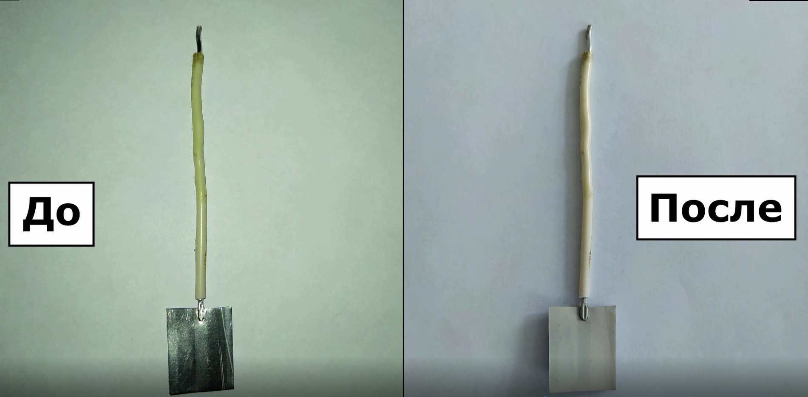

НОЦ «Инженерия будущего» - это научно-образовательный центр, призванный объединить науку и реальный сектор экономики
Автоматизированная установка микродугового оксидирования
Печерская Е.А. 1, 
iit@pnzgu.ru
Голубков П.Е.1,
Карпанин О.В.1
Метальников А.М.1
Вареник Ю.А.1
1 ФГБОУ ВО «ПГУ»
Возможности
- получение композиционных оксидокерамических покрытий с заданными свойствами методом микродугового оксидирования (МДО)
- исследование закономерностей МДО во времени путем измерения формовочных кривых напряжения, динамических вольтамперных характеристик процесса МДО, импеданса структуры электрод–покрытие–электролит
- контроль выработки и температуры электролита
- контролируемое изменение токового режима непосредственно во время проведения процесса МДО
Характеристики
- питание от сети переменного тока 220 В;
- диапазон напряжений на образце -100 .. +500 В
- диапазон тока через образец 0,25 .. 1,75 А
- частота следования импульсов тока 50 Гц
- диапазон частот переменного сигнала для измерителя импеданса 10 Гц .. 10 кГц
- диапазон амплитуды переменного сигнала для измерителя импеданса 0,01 .. 1 В
- пределы измерения по емкости 0,1 и 1 мкФ
- основная погрешность измерения емкости не более 0,5 %
- основная погрешность измерения напряжения и тока не более 0,5 %
- количество точек ВАХ до 60
- суммарное время одного измерения не более 2 с
Применение
Нанесение твердых, износо- и коррозионностойких защитных покрытий на детали, узлы и элементы конструкции авиационных изделий из лёгких металлов

Рис. 1 - Изображения образцов до и после обработки
Комплект
- автоматизированная установка микродугового оксидирования
- гальваническая ячейка
- компьютер или ноутбук
- специализированное программное обеспечение
Рис. 2 - Комплект оборудования автоматизированной установки микродугового оксидирования